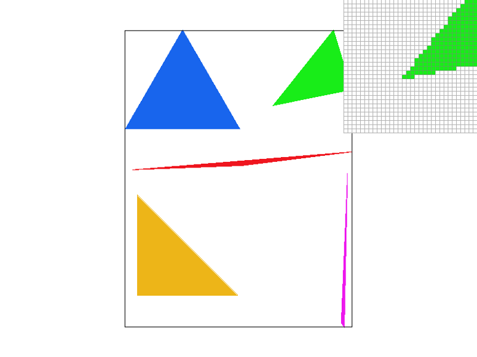

Overview
Give a high-level overview of what you implemented in this project. Think about what you've built as a whole. Share your thoughts on what interesting things you've learned from completing the project.
Section I: Rasterization
Part 1: Rasterizing single-color triangles
To rasterize a triangle, we go through each pixel within the triangle bounding box, and then perform the 3-line test on the center of the pixel (flooring the coordinates and adding 0.5). If the center point lies within the triangle, or if it doesn’t lie “inside” any of the lines (and thus inverted), we continue with rasterizing the point (calling the rasterize_point function). Our algorithm is no worse than one that checks each sample within the bounding box of the triangle because we only check pixels within the range of the min and max x coordinates and min and max y coordinates. This keeps the check within the bounding box of the triangle.
|

|
Part 2: Antialiasing triangles
Data Structures: We updated the sample_buffer to hold height * width * sample_rate colors, enabling us to store the color information of every single super sample.
Our supersampling algorithm is as follows:
- In rasterize_triangle, we scale the original image by sqrt(sample_rate) pixels in each axis so the coordinates match the image if it were the high resolution version. Then we conduct the 3 line test for each pixel’s n=sample_rate sections (essentially sampling (3 line test) as usual but with the scaled image). If the pixel’s subsection passes the 3 line test, fill the color into the sample buffer’s high resolution location (index into the sample_buffer as if it were a matrix)
- Since only rasterize_triangle had supersampling, we edited fill_pixel to supersample for when rasterize_line or rasterize_point is called. We had to adjust for how the lines and points were being rasterized through the sample_buffer since we were not implementing supersampling those. The default fill_pixel used to directly map 1 pixel from rasterize_line or rasterize_point to a single pixel in the sample_buffer. However, if the sampling_rate is now greater than 1 and we resize the sample_buffer, 1 pixel in rasterize_line or rasterize_point actually maps to sample_rate number of pixels in the sample_buffer, so fill_pixel correctly fills in all the necessary pixels based on the sampling rate.
- Then in resolve_to_framebuffer, we need to map our supersampled pixels back into the single pixel that actually maps to the framebuffer. To do this, we iterate over the pixels of the framebuffer and pick out the sample_rate number of pixels in the sample_buffer associated with the pixel. We then average the color of all these subsamples to set the pixel color of the framebuffer.
For lines and points supersampling won’t change anything since supersampling is not implemented (i.e. all subsamples are the same color), but supersampling is useful for toning down jaggies and any aliasing. It allows more consideration of the fact that the one part of the pixel you sample might not reflect the entire pixel’s color. We use supersampling to antialias the triangles because for pixels with a small part of the triangle edge in it (and thus missed by the center point sampling), it allows for the small part of the triangle that is in the pixel to be considered into the color of the pixel.
Modifications to pipeline:
- Step 3: Rasterizing the triangles for the interior image will supersample based on the sample rate into a sample_buffer that may be resized so not all pixels of the original pixel may map to the same color. We also did not use the original fill_pixel function given when implementing supersampling.
- Step 4: When rasterizing the square boundary, since lines are being rasterized, the sample_buffer in between may map multiple pixels if the sample is greater than 1 but this does not have any effect on the actual framebuffer since they are averaged out again.
- Step 5: Based on the sample_rate increasing, it is no longer a 1:1 mapping, so instead of directly mapping the sample_buffer pixels to the framebuffer pixels, colors of the sample_buffer are averaged and then the framebuffer takes on the average color of the supersampled pixels.
screenshots of basic/test4.svg with the default viewing parameters at sample rates 1, 4, and 16.

|

|
|
The results from sample_rate 1, 4, and 16 show less extreme jaggies each time you increase the sample_rate. In the zoomed in portion, we can see different shades of the original color (from the supersampling and averaging) on the border once the sample_rate is greater than 1, and comparing sample_rate 4 and 16 we can see a larger variation in shades of the original color with sample_rate of 16. These extra variations of color let the border seem smoother when looking at the image from farther away.
Part 3: Transforms
We gave our cubeman a fancy shirt and a hat, and had him dance with one arm up and one arm down, picking up one leg, bent at the knee.
Section II: Sampling
Part 4: Barycentric coordinates
Barycentric coordinates linearly interpolate values at triangle vertices, assigning weights for each triangle vertex based on which point you are interpolating for (also could be considered proportion calculation). For any point, you can calculate weights of triangle vertices such that alpha, beta, and gamma sum up to 1. This is useful for creating color blends and gradients. For example, if you look at the image aid of the triangle below, for each point inside the triangle, after calculating the weight for each vertex/color (red, green, and blue) and by combining the weighted colors together, you can get a color that is a gradient between the 3 vertices. In this case, point V has more green and blue in it, and less red, and which will be reflected in the three corresponding alpha, beta, and gamma weights.
|
|

|
Part 5: "Pixel sampling" for texture mapping
Part 6: "Level sampling" with mipmaps for texture mapping
Section III: Art Competition
If you are not participating in the optional art competition, don't worry about this section!